# 数据聚类
# 引子
# 聚类定义
将数据集分成多个簇（cluster），在同一个簇内，样本之间具有较高的相似性，不同簇的样本之间具有较小的相似性，寻找数据的内在分布结构，属于典型的无监督学习方法。
即物以类聚，人以群分。
聚类特性：
具有多样性

不同类别，在分布上有不同形式，有的是聚集，有的是规律排布
具有主观性
不同分类规则下，可能得到不同的聚类结果。
# 聚类方法分类
按照技术路线：
- 划分法：采用一定的规则对数据进行划分，如K-means等
- 层次法：对给定样本进行层次划分，如层次聚类
- 密度法：对数据的密度进行评价
- 网格法：将空间数据划分为有限个单元网格结构，然后基于网络结构进行聚类
- 模型法：为每一个类引入一个模型，然后对数据进行划分，使其满足各自分派的模型，如高斯混合模型（GMM）
按照度量准则
- 基于聚类的聚类方法：基于各种不同的距离或者相 似性来度量点对之间的关系，如K-means等。
- 基于密度的聚类方法：基于合适的密度函数来对样 本进行聚类。
- 基于连通性的聚类方法：主要包含基于图的方法。 高度连通的数据通常被聚为一簇，如谱聚类。
按聚类所处理的数据类型
- 数值型数据聚类
- 离散型数据聚类
- 混合型数据聚类
# 聚类结果的表现形式
- 通过类中心或者类边界点来表示
- 图形化方式：聚类树
# 层次聚类
层次聚类是递进式聚类，例如在生物学上物种分类为界、门、纲、目、科、属、种。
对于 n 个样本，极端的情况下，最多可以将数据分成 n类； 最少可以只分成一类，即全部样本都归为一类。
一般两种方向进行层次聚类
凝聚的层次聚类（自低向上）
将每个样本作为一个簇，然后根据给定的规则逐渐合并 一些样本，形成更大的簇，直到所有的样本都被分到一个簇中。
自低向上的层次聚类步骤：
- 初始化：每个样本形成一类
- 合并：计算任意两个类之间的距离（或相似性），将 距离最小（或相似性最大）的两个类合并为一个类， 记录下这两个类之间的距离（或相似性），其余类不 变。
- 重复步骤 2，直到所有样本被合并到一个类之中。
分裂的层次聚类（自顶向下）
将所有的样本置于一个簇中，然后根据给定的规则逐渐 细分样本，得到越来越小的簇，直到某个终止条件得到满足。
层次聚类表现形式：聚类树
层次聚类结果用一棵树 来表示，称为聚类树 (dendrogram) ，或系统树图。
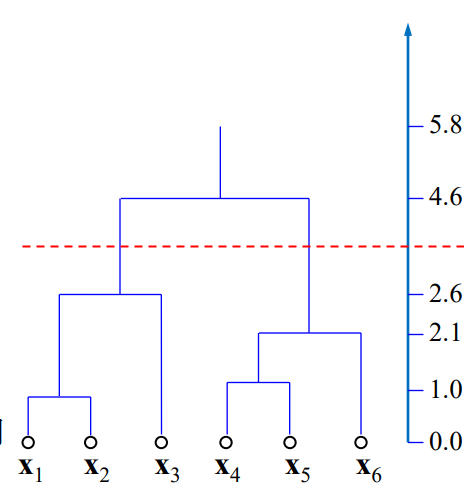如上图，最底层的每个节点表示一个样本，采 用树枝连接两个合并的cluster，树枝的长度反 映两个合并的cluster之间的距离（或相似性）。
# 距离与相似性度量
# 距离
常用距离函数

马氏距离
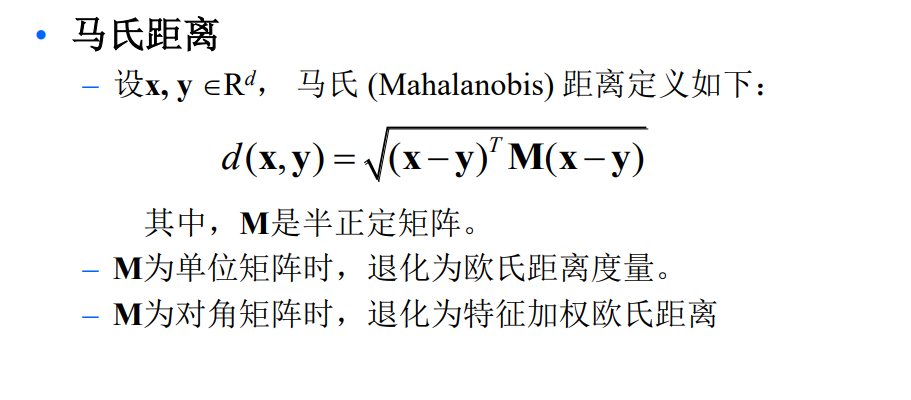马氏距离中M，可以通过不同任务，学习得到适x应的M值
# 相似度
余弦相似度
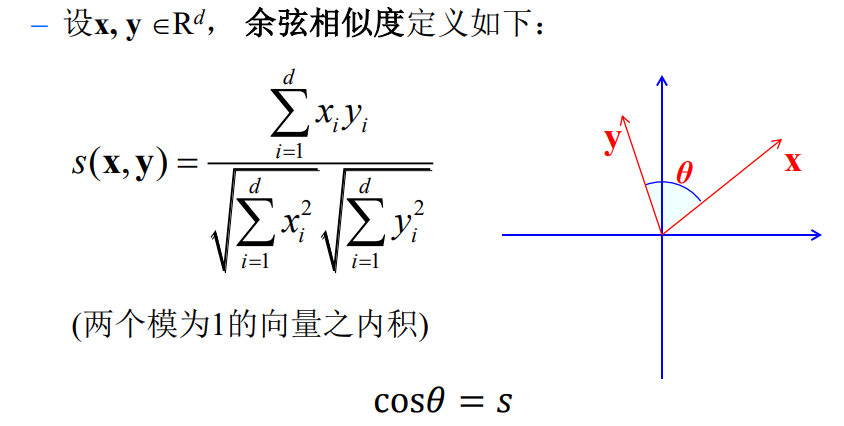离散数据点相似性
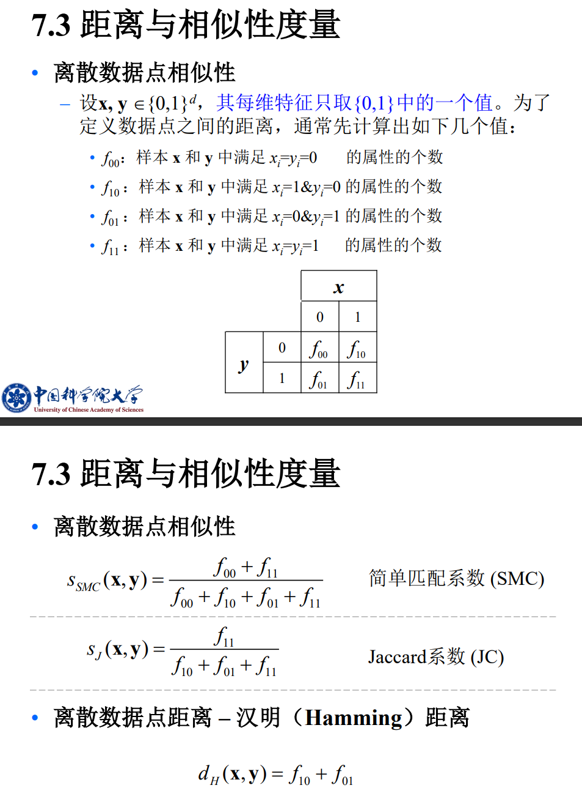
# K-均值聚类
K均值聚类作为十大经理数据挖掘方法之一，提出至今有60年，任然被广泛使用，目前针对K均值聚类也有许多变种算法。
# 算法描述
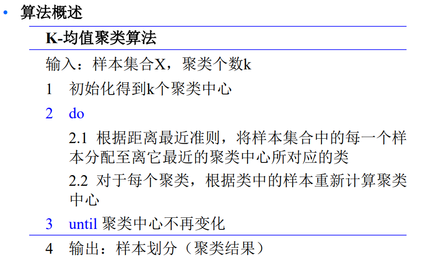# 优缺点
优点：
- 解决聚类问题的一种经典算法，简单、快速。
- 计算效率高，适合处理大数据集。
- 对于密集簇，聚类效果很好。
缺点：
- 必须事先给定簇的个数，且对初始值敏感。
- 对噪声、孤立数据点、外点很敏感。
- 不适合于发现非凸数据结构的簇。
- 不适合处理大小相差很大的簇。
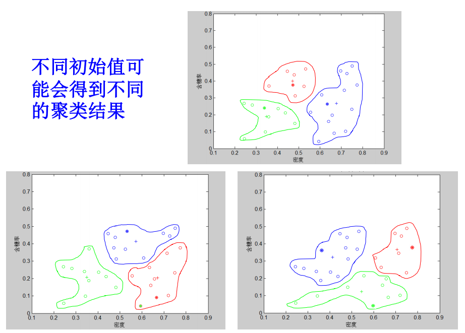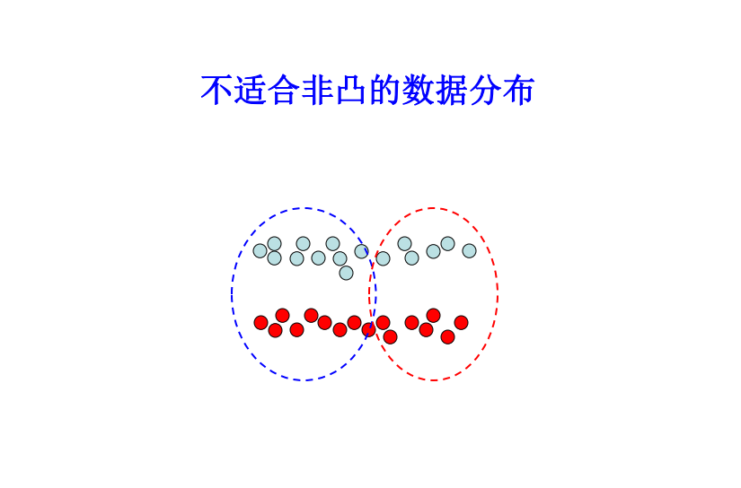

# 原理解释
K-均值聚类是误差平方和最小准则下的聚类方法
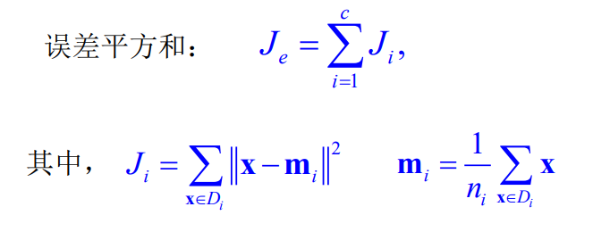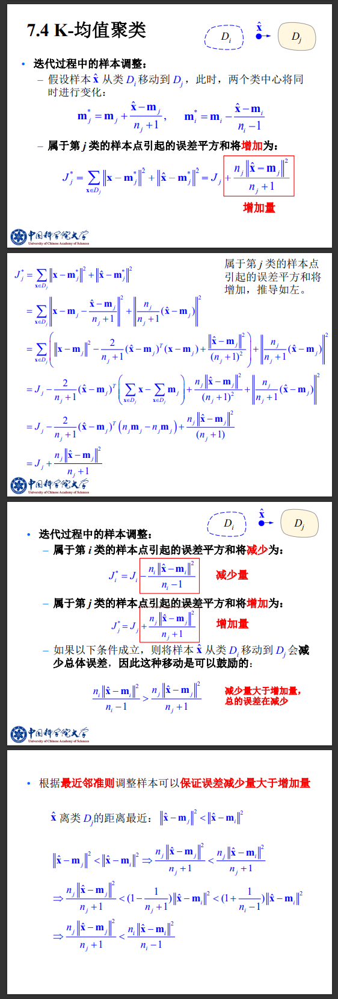
# 经验之谈
关于初始点的选择建议：
- 凭经验选择初始代表点：根据问题相关性。
- 将数据随机地分成 c 类：计算每类中心，以此作为初始点。
- 中心分解方法：先将所有数据看成一个聚类，计算聚类中心，然后寻找与该中心最远的点，划入一部分数据点至该最远点所在的区域；对剩下的数据，以此类推。
- 最远距离法：先随机选一个点作为第一个聚类中心， 然后选择距离最远的点作为第二个聚类中心，依次类推。
# 模糊K-均值聚类
# 模糊K-均值聚类准则
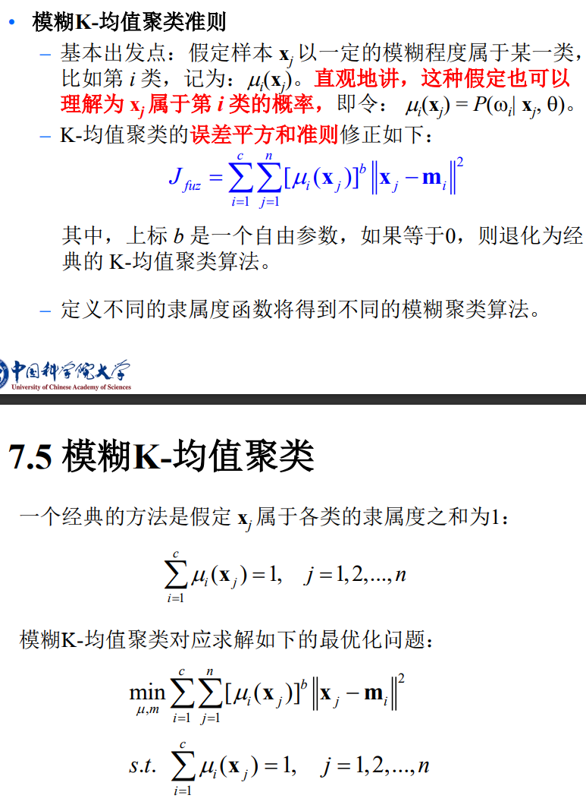每一个样本，可以隶属多个类别，其隶属程度由概率表达
# 算法描述
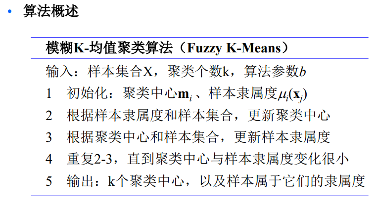# 优缺点
优点：
- 算法的鲁棒性更好
缺点：
- 仍处理不好外点
- 仍对初始值敏感
- 仍需知道类别数
# 混合模型聚类
# 样本生成过程
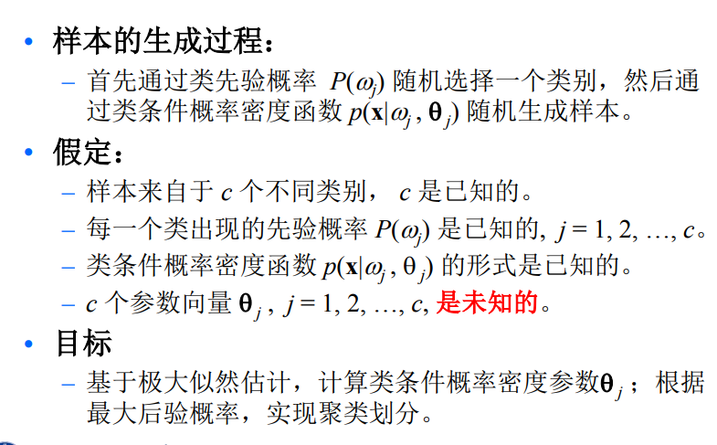 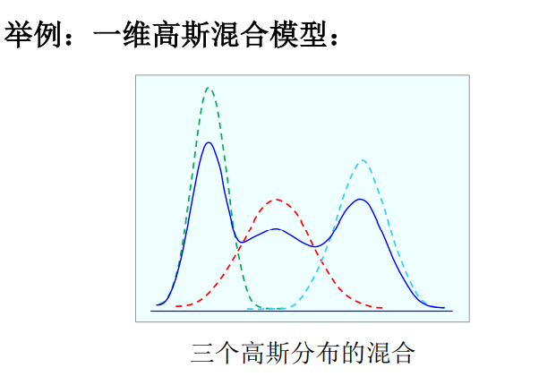认定样本的生成是混合模型的组成结果，在一定假设程度上推演混合模型及混合分解后的模型，判断样本属于某一个分解模型，那么属于某一个类。
即认为每一个类是一个概率密度分布的，判断样本属于每一个类的概率，归属于某一个类别
问题：如何求解每一个类的条件概率密度函数
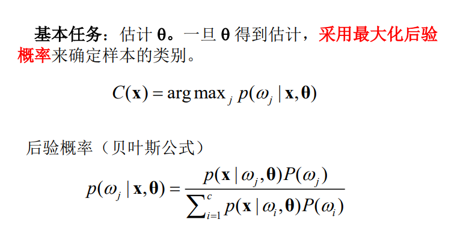
# 谱聚类
谱聚类算法建立在图论中的谱图理论基础之上，其 本质是将聚类问题转化为一个图上的关于顶点划分的最优问题。
从图切割的角度，聚类就是要找到一种合理的分割 图的方法，分割后能形成若干个子图。连接不同子图的边的权重尽可能小，子图内部边权重尽可能大。
谱聚类算法建立在点对亲和性基础之上，理论上能对任意分布形状的样本空间进行聚类。
名字的由来：广义上讲，任何在学习过程中应用到矩阵特 征值分解的方法均叫谱学习方法，比如主成分分析 （PCA）、线性判别成分分析（LDA）、谱聚类，等等。
# 图论基本概念
图G
由顶点集 V 和边集 E 所构成，记为 G(V,E)。根据边是否有向，可以分为无向图或者有向图，谱聚类中一般研究的是无向图。
图G的邻接矩阵W
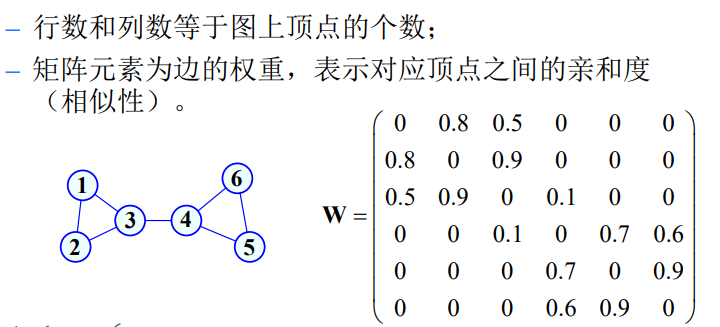顶点的度
所有与该顶点相连接的边的权重之和。
度矩阵
为一个对角矩阵。将邻接矩阵W各行元素累加 至对应的主对角元素，可得到度矩阵 D。
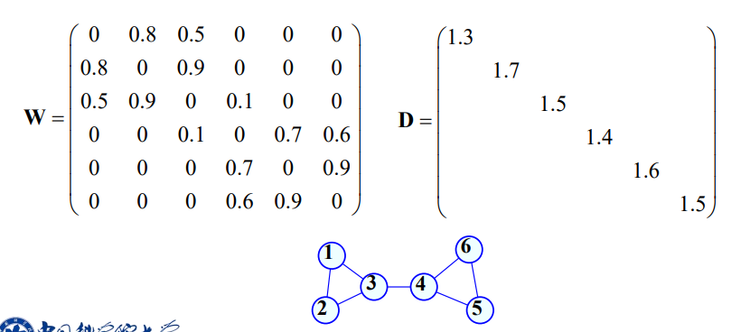拉普拉斯矩阵
度矩阵D减去邻接矩阵W得到拉普拉斯矩阵L。
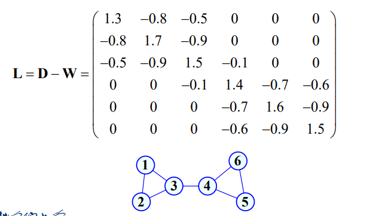 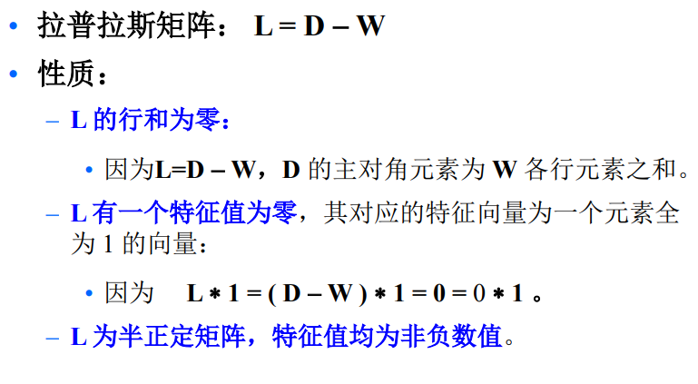
# 谱聚类技术路线
- 图构造，计算顶点之间的相似性，构建图的邻接矩阵；
- 构建拉普拉斯矩阵；
- 求解拉普拉斯矩阵最小的特征值对应的特征向量；
- 由这些特征向量构成样本点的新特征，采用K-means等聚类方法完成最后的聚类。